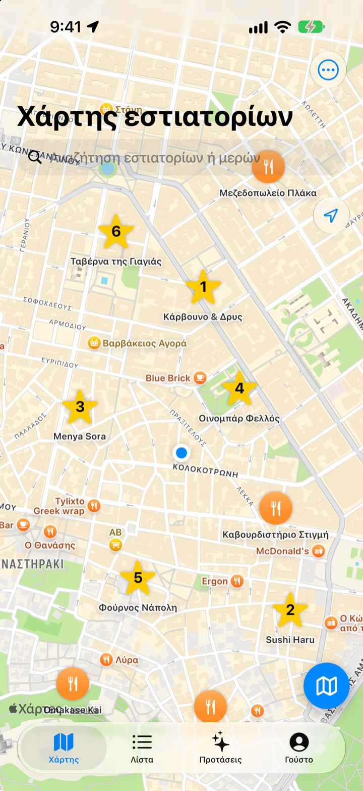
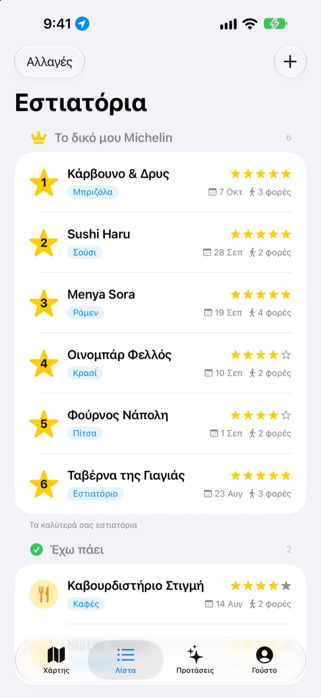
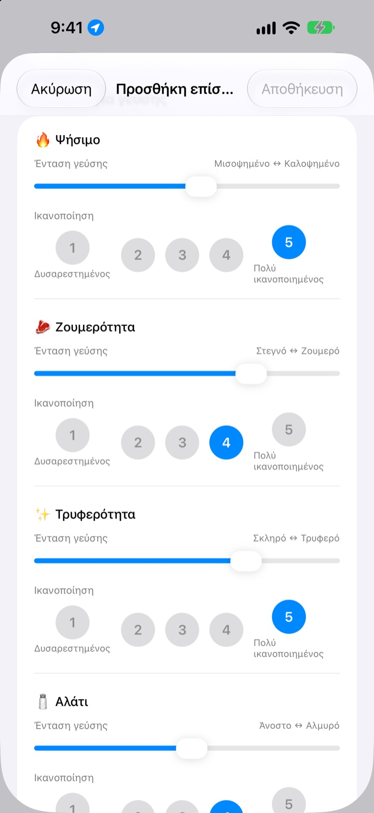
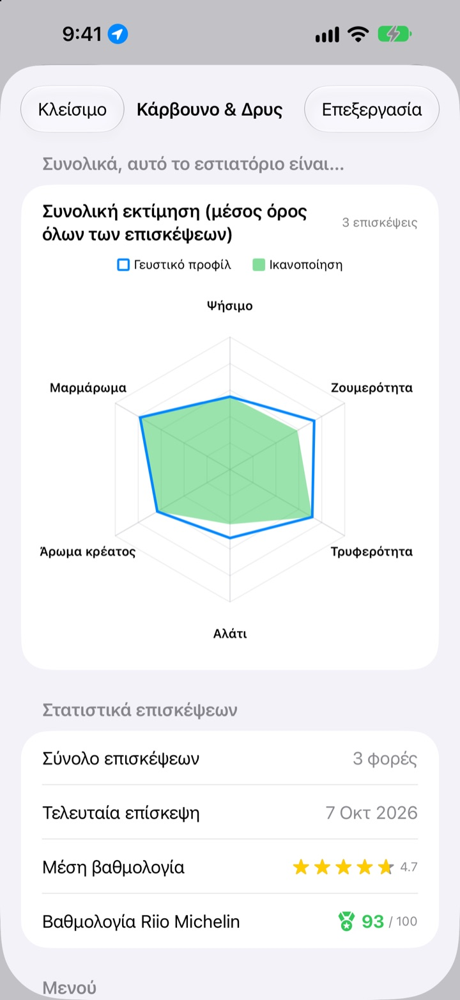

Εκείνο το υπέροχο μέρος,
δεν θα το ξεχάσετε ξανά
Καρφιτσώστε στον χάρτη τα εστιατόρια όπου έχετε πάει και όσα θέλετε να δοκιμάσετε, και σε κάθε επίσκεψη σημειώστε τι παραγγείλατε, φωτογραφίες και τη γεύση. Όταν δεν ξέρετε πού να φάτε, οι δικές σας σημειώσεις έχουν την απάντηση.
Όλες οι λειτουργίες είναι δωρεάν. Χωρίς εγγραφή, όλα μένουν στο iPhone σας.

Βαθμολογήστε ένα πιάτο
Διαλέξτε είδος φαγητού και ορίστε πόσο έντονη ήταν κάθε γεύση και πόσο σας άρεσε. Ίδια κριτήρια και ίδιος υπολογισμός με μια επίσκεψη στην εφαρμογή.
Ήταν υπέροχο, αλλά τι είχα παραγγείλει;
Θυμάστε ότι το εστιατόριο σας άρεσε πολύ, αλλά το όνομα έχει θολώσει, και τι παραγγείλατε ή αν ο ζωμός ήταν αλμυρός δεν το θυμάστε καθόλου. Κι έτσι ψάχνετε ξανά και διαβάζετε κριτικές αγνώστων. Το Insaeng κρατά σε χάρτη ό,τι δοκιμάσατε εσείς, ώστε η επόμενη επιλογή να βασίζεται στη δική σας εμπειρία.
Έχω πάει, Θέλω να πάω και το δικό σας Michelin
Αναζητήστε στον χάρτη ή πατήστε ένα κοντινό μέρος και αποθηκεύεται αμέσως. Κρατήστε χωριστά όσα έχετε επισκεφθεί από όσα θέλετε να δοκιμάσετε, και κατατάξτε τα έξι αγαπημένα σας από το 1 ως το 6.
Όταν κάποιος ζητήσει πρόταση, απλώς δείξτε τη λίστα.

Ερωτήσεις στα μέτρα κάθε πιάτου
Την ένταση κάθε γεύσης, όπως το καυτερό ή το αλάτι, την ορίζετε με ρυθμιστικό, και το πόσο σας άρεσε το βαθμολογείτε χωριστά από 1 ως 5. Στη μπριζόλα μετράνε το ψήσιμο και η ζουμερότητα, στο σούσι το ρύζι και το ψάρι, στο ράμεν ο ζωμός και τα νουντλς.
Κάθε επίσκεψη κρατά επίσης πιάτο, φωτογραφίες, αστέρια και σημειώσεις.

Πού αξίζει να ξαναπάτε, φαίνεται με αριθμούς
Με περισσότερες επισκέψεις, κάθε εστιατόριο δείχνει μια συνολική εκτίμηση από τον μέσο όρο όλων και μια Βαθμολογία Riio Michelin με άριστα το 100, που συνδυάζει αστέρια και ικανοποίηση.
Όταν φεύγετε από ένα αποθηκευμένο εστιατόριο, λίγο αργότερα έρχεται υπενθύμιση να καταγράψετε την επίσκεψη.

Ξεκινήστε σε τρία βήματα
- 1
Αποθηκεύστε ένα εστιατόριο
Αναζητήστε το στον χάρτη ή πατήστε ένα κοντινό μέρος.
- 2
Καταγράψτε την επίσκεψη
Πιάτο, φωτογραφίες, αστέρια και γεύση. Η βαθμολογία γεύσης είναι προαιρετική.
- 3
Διαλέξτε το επόμενο
Δείτε το top 6 και τις βαθμολογίες και πηγαίνετε με Χάρτες Apple, Kakao Map ή Naver Map.
Τι βαθμολογείται ανά είδος φαγητού
- 🍽️ Γενικά
- Καυτερό, Ένταση, Γλυκύτητα, Αλμύρα, Λιπαρότητα, Φυσική γεύση
- 🥩 Μπριζόλα
- Ψήσιμο, Ζουμερότητα, Τρυφερότητα, Αλάτι, Άρωμα κρέατος, Μαρμάρωμα
- 🍣 Σούσι
- Σάρι (ρύζι), Νέτα (ψάρι), Βασάμπι, Ισορροπία, Πλάσιμο, Θερμοκρασία
- 🍜 Ράμεν
- Ζωμός, Νουντλς, Τσάσου, Υλικά, Θερμοκρασία, Ισορροπία
- 🍕 Πίτσα
- Ζύμη, Σάλτσα, Τυρί, Ψήσιμο, Υλικά, Ισορροπία
- 🍷 Κρασί
- Σώμα, Τανίνες, Οξύτητα, Άρωμα, Επίγευση, Ισορροπία
- ☕ Καφές
- Οξύτητα, Σώμα, Γεύση, Επίγευση, Γλυκύτητα, Ισορροπία
Τα υπόλοιπα φαγητά βαθμολογούνται με τα γενικά κριτήρια της πρώτης γραμμής. Μπορείτε επίσης να δημιουργήσετε δικές σας κατηγορίες.
Συχνές ερωτήσεις
Πώς προσθέτω ένα εστιατόριο;
Πληκτρολογήστε το όνομα του εστιατορίου στο πεδίο αναζήτησης στο πάνω μέρος του χάρτη και πατήστε «Προσθήκη στα εστιατόριά μου» στα αποτελέσματα. Μπορείτε επίσης να το προσθέσετε κατευθείαν πατώντας ένα κοντινό μέρος που εμφανίζεται στον χάρτη. Αν το μέρος δεν βγαίνει στην αναζήτηση, προσθέστε το μόνοι σας στην τρέχουσα τοποθεσία σας ή σε σημείο που διαλέγετε στον χάρτη.
Τι σημαίνουν τα «Έχω πάει», «Θέλω να πάω» και Top 6;
Έχω πάει – εστιατόρια που έχετε ήδη επισκεφθεί. Μπορείτε να καταγράφετε τις επισκέψεις σας. Θέλω να πάω – εστιατόρια που θέλετε να δοκιμάσετε κάποια μέρα. Αφού πάτε, αλλάξτε το σε «Έχω πάει» από τη σελίδα λεπτομερειών του εστιατορίου. Top 6 (Το δικό μου Michelin) – τα έξι πιο αγαπημένα σας εστιατόρια, με κατάταξη από την 1η έως την 6η θέση. Ένα εστιατόριο στη λίστα «Θέλω να πάω» δεν μπορεί να μπει στο Top 6.
Πρέπει οπωσδήποτε να βαθμολογήσω τη γεύση;
Όχι, είναι προαιρετική. Αν βαθμολογήσετε, η ένταση γεύσης και η ικανοποίηση προστίθενται στη συνολική εκτίμηση του εστιατορίου και μετρούν στη Βαθμολογία Riio Michelin.
Πότε έρχεται η ειδοποίηση «Πώς ήταν η σημερινή σας επίσκεψη;»;
Αν μείνετε πάνω από 5 λεπτά κοντά σε ένα αποθηκευμένο εστιατόριο και φύγετε, η ειδοποίηση έρχεται περίπου 40 λεπτά αργότερα. Η λειτουργία χρειάζεται πρόσβαση στην τοποθεσία με επιλογή «Πάντα» και ενεργές ειδοποιήσεις. Αν δεν θέλετε την ειδοποίηση, απενεργοποιήστε τις ειδοποιήσεις στις Ρυθμίσεις > Εφαρμογές > Insaeng ή αλλάξτε την τοποθεσία σε «Κατά τη χρήση της εφαρμογής». Ο έλεγχος τοποθεσίας γίνεται μόνο στη συσκευή. Οι διαδρομές σας δεν αποθηκεύονται και δεν αποστέλλονται πουθενά.
Μπορώ να τη χρησιμοποιήσω χωρίς πρόσβαση στην τοποθεσία;
Ναι. Διαλέγετε μόνοι σας το σημείο στον χάρτη για να προσθέσετε ένα εστιατόριο και καταγράφετε κανονικά τις επισκέψεις. Μόνο η εμφάνιση της τρέχουσας τοποθεσίας και η υπενθύμιση μετά την επίσκεψη δεν θα λειτουργούν.
Η αναζήτηση δεν βγάζει αποτελέσματα
Η αναζήτηση μερών απαιτεί σύνδεση στο διαδίκτυο. Δοκιμάστε ξανά με άλλο όνομα ή με πιο σύντομη λέξη-κλειδί. Αν πάλι δεν το βρίσκετε, διαλέξτε το σημείο στον χάρτη και προσθέστε το μόνοι σας.
Πού αποθηκεύονται οι καταγραφές; Συγχρονίζονται με άλλες συσκευές;
Τα εστιατόρια, οι επισκέψεις και οι φωτογραφίες αποθηκεύονται μόνο σε αυτό το iPhone. Η τρέχουσα έκδοση δεν υποστηρίζει συγχρονισμό με άλλες συσκευές και η δημιουργία αντιγράφου ασφαλείας και η επαναφορά μέσω iCloud στις ρυθμίσεις δεν λειτουργούν ακόμη. Τα δεδομένα της εφαρμογής περιλαμβάνονται όμως στο πλήρες αντίγραφο ασφαλείας του iPhone (αντίγραφο στο iCloud ή σε υπολογιστή).
Θέλω να διαγράψω όλες τις καταγραφές
Στις ρυθμίσεις της οθόνης του χάρτη πατήστε «Διαγραφή όλων των δεδομένων» και τα εστιατόρια και οι επισκέψεις θα διαγραφούν. Η ενέργεια δεν αναιρείται. Για να διαγράψετε εντελώς και τις φωτογραφίες, διαγράψτε την εφαρμογή.
Αν διαγράψω και εγκαταστήσω ξανά την εφαρμογή, θα έχω τις καταγραφές μου;
Όχι. Οι καταγραφές αποθηκεύονται μόνο στη συσκευή, οπότε διαγράφονται μαζί με την εφαρμογή. Σκεφτείτε το καλά πριν τη διαγράψετε.
Είναι πραγματικά όλα δωρεάν;
Ναι. Όλες οι λειτουργίες είναι δωρεάν, χωρίς διαφημίσεις και χωρίς λογαριασμό. Το «Στήριξε τον δημιουργό» στις ρυθμίσεις είναι εντελώς προαιρετικό και δεν ξεκλειδώνει τίποτα.
Αν δεν βρήκατε απάντηση, στείλτε μας μήνυμα απευθείας από την εφαρμογή στις Ρυθμίσεις > Υποστήριξη ή γράψτε στο mizzking75@gmail.com. Αναφέρετε την έκδοση της εφαρμογής, το μοντέλο του iPhone και τι κάνατε σε ποια οθόνη – έτσι θα το εξετάσουμε πιο γρήγορα.